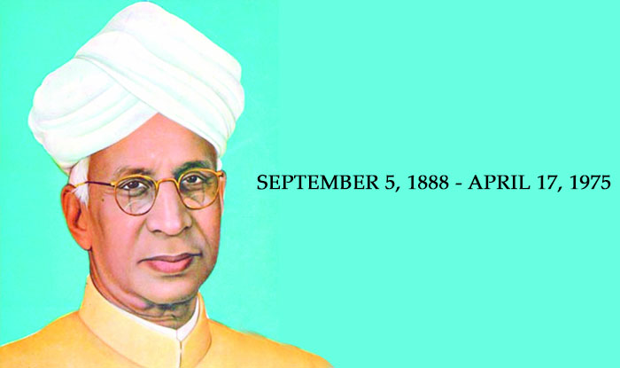

TEACHERS DAY

Teachers’ Day is celebrated in India on September 5 as an appreciation of their hard work and contribution in the field of education.
In India, the birthday of second President Dr Sarvepalli Radhakrishnan Virswami is celebrated as teachers’ day.
It is said that when Dr Radhakrishnan who was a great teacher became the President, his students wanted him to celebrate his birthday but he politely refused. He then suggested, “Instead of celebrating my birthday, it would be my proud privilege if September 5 is observed as Teachers’ Day.”
Since then, Dr Radhakrishnan’s birthday has been observed as ‘Teacher’s Day’. Other than being a teacher, Radhakrishnan was also a statesman and philosopher who served as the first Vice-President of India.